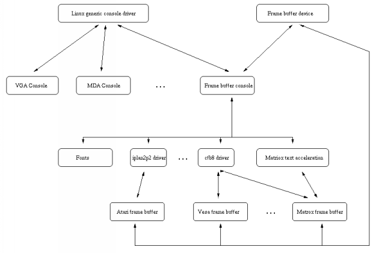
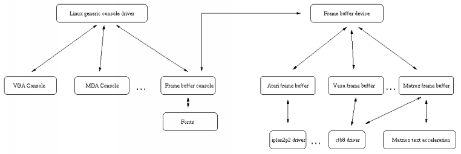

New internal structure for the Linux Framebuffer drivers
Note: this is only a draft. Please send your comment to fabrice.bellard at free.fr
Note:
(Apr 10 1999) James Simmons
is now maintaining the patch and it is likely to be included in the 2.3.x
Linux kernels. The acceleration scheme proposed here is no longer
supported.
Why ?
Currently, here is the structure of the linux
console and frame buffer drivers :

Although it allows to have a console on any frame buffer device, it
has some drawbacks :
-
You cannot compile the frame buffer drivers without compiling the console
code (flag CONFIG_VT in the kernel) because they depend on a structure
(struct display) provided by the console code (fbcon.c).
This is an important drawback when you want a small linux kernel for embedded
appliances for example.
-
Each frame buffer driver must handle some console related problems, which
complicates them and makes the kernel code harder to understand (and to
debug !). For example, each frame buffer driver must handle the console
switch. Moreover, each frame buffer drivers parses parameters which are
only related to the console (ywrap, ypan for vesafb,
the default font for other drivers).
-
The recent frame buffer drivers add primitives for text acceleration. If
you read their source code (see matroxfb, atyfb, ...), you'll
understand that this is in fact really a 'kernel mode acceleration' which
is included in the kernel. A clear policy should be defined on this topic.
Here is the structure I propose in my patch for fbcon :

The following points have been modified :
-
You can compile the console and the frame buffer devices separately. The
frame buffer console (fbcon) is activated with the flag CONFIG_FB_CONSOLE
while the frame buffer drivers are enabled with the existing flag CONFIG_FB.
A new menu 'Console drivers' is added in the main kernel configuration
menu. The fonts are clearly associated with the flag CONFIG_FB_CONSOLE
because they are only useful when you use the frame buffer console.
-
All the console related problems are handled in fbcon.c (console switch,
console palette handling, etc...). It means that each frame buffer driver
is a lot simpler, making the kernel smaller and simpler.
-
The generic support functions (fbcon-cfb8, fbcon-iplan2p2, ...) for the
frame buffer devices are no longer linked to the console code. It means
that they provide generic graphical functions (at least FillRect, CopyArea,
GlyphBlt) which are used by the console code to display any font width.
Of course, as it is done now, the support for some fonts width may be faster
due to constraints in the frame buffer structure.
-
Optionnaly, these generic graphical primitives can be made accessible
from user space with a special ioctl (FBIOACCEL_EXEC). Since they are intended
to be accelerated, the user process supplies a display list where
several commands are grouped in order to compensate the overhead of the
system call. This kernel space acceleration costs almost nothing in terms
of size and complexity of the kernel code since the code is the one
used for the text console acceleration. Each graphical driver can add more
commands, but only the text related commands are mandatory.
Compatibility
From user space, nothing is changed, which means that even binary compatibility
is preserved. This is only an internal kernel modification. However,
each frame buffer driver must be slightly patched in order to work with
this system. Since there are about twenty frame buffer drivers, it is still
a big work (most of the work would consist in testing the driver of every
supported architecture)... so that's why we need to know whether it is
worth doing it.
The patches proposed here would make each driver a lot simpler and would
accelerate the developpement of new frame buffers drivers. Since theses
changes do not modify too much the current fbcon internal structures, the
risks of bugs are diminished compared to a 'completely new good idea (tm)'.
The current implementation (version 0.2 - Jan 27 1999):
It is a patch against the lastest kernel (2.2.0-final). It is maintained
by Fabrice Bellard and James
Simmons.
The vesafb and vfb drivers are implemented. cfb8,cfb16,cfb24 and cfb32
are implemented. mfb, cfb2 and cfb4 support compiles but is untested.
Get the kernel patch: linux-2.2.0-final-fb-0.2.patch.gz
Get the example program (for benchmarking and testing) : fbcon-test-0.1.tgz
TODO LIST
-
Finish and test mfb/cfb2/cfb4 on PC architecture.
-
Include PolyGlyphBlt support for mfb/cfb2/cfb4.
-
Include a vga16/vga2 device and fbcon-vga16 to be able to use fbcon on
any PC. Include a 256 color VGA 320x200 console with 4x8 fonts too (everything
could go in vesafb).
-
Include support for MSB/LSB first, different FB endianness (the code is
ready for that, mainly a problem of naming).
-
Patch afb/ilbm and iplan2pX for Amiga and Atari frame buffer structure.
merge iplan2p2/4/8 into one generic driver. Suppress fbcon-mac (emulated
by fbcon-mfb).
-
Find a better naming for fbcon-cfbX (maybe fbdev-cfbX). Find a way
to name
alternate endianness/bit ordering generic drivers.
-
Include support for the fbcon=xxx kernel option which contains fbcon related
option (font: ywrap: mapping of fb devices to virtual consoles)
-
Separate acceleration definitions from fb.h to fbaccel.h.
-
Include hardware cursor support in fbcon (at least for testing the hardware
cursor API).
-
Convert more drivers (matroxfb is the priority, in order to test the accelerated
stuff and mode switching).
-
Debug mode switching code in fbcon/fbmem (it is now incorrect).
-
Put console in a sane state after a console switch (need to issue at least
SetClipRect command).
Fabrice Bellard fabrice.bellard at free.fr , Apr 10,
1999.